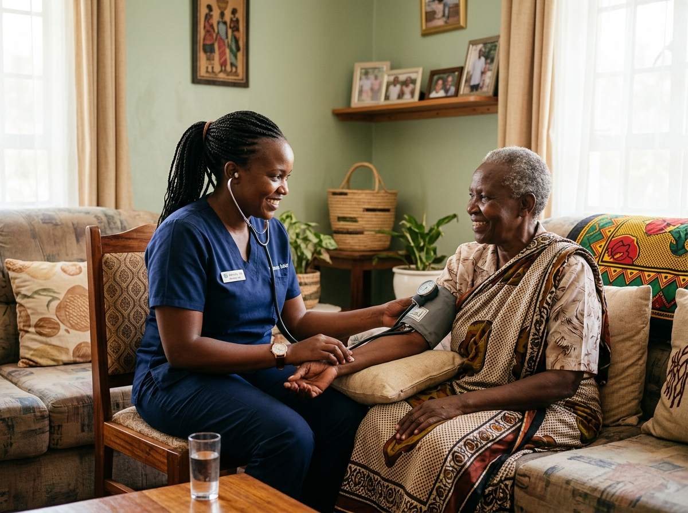

A Dependable In-Home Extension of Your Clinical Care
As a physician, discharge coordinator, or social worker, your top priority is ensuring that your patient's recovery trajectory remains safe and continuous once they leave your facility. Too often, discharge plans falter due to delayed home setups, medication confusion, or lack of skilled oversight.
OnPoint Nurse & Home Care operates as your clinical bridge into the community. Founded and led by experienced Registered Nurses, we follow strict British Columbia College of Nurses and Midwives (BCCNM) standards, translating complex hospital directives into reliable, compassionate home care.
"We don't just provide home care aides; we provide clinical governance, structured physician updates, and proactive vital surveillance that protects your patient from readmission."

How We Support Healthcare Teams
Tailored referral pathways designed to solve your most challenging transitional care scenarios.
Hospital Discharge Teams
Bedside consultations, rapid equipment sourcing, DME coordination, and doorstep patient reception for complex surgical and medical discharges.
Discharge Planners →Physicians & Specialists
Direct patient referral portal, medication reconciliation, hypertension/diabetic tracking relays, and routine clinical charting to your clinic.
Physician Portal →Direct Patient Referral
Fast-track electronic referral form with instant confirmation, 2-hour clinical triage, and direct communication with family members.
Refer a Patient →The Referral Process
Transparent step-by-step pathway from initial referral submission to bedside intake, home setup, and scheduled medical debriefs.
View Process →How We Coordinate with Public Health Authorities
Seamless synchronization with Vancouver Coastal Health (VCH) and Fraser Health community care teams.
BCCNM Registered Nurse Supervision & Delegation of Tasks
Every in-home clinical procedure is performed either directly by a licensed RN/LPN or under formal RN Task Delegation according to British Columbia College of Nurses and Midwives (BCCNM) regulatory bylaws.
- Direct nursing accountability for all wound care, catheter, and medication administration tasks
- Rigorous annual competency evaluations and sterile technique verifications
- Comprehensive WorkSafeBC and commercial professional liability coverage
Public Health Care Bridging & Supplemental Hours
When public community health allocations (such as 1 hour of daily personal care) are insufficient to prevent hospital admission or family burnout, OnPoint provides seamless supplemental care blocks.
- We bridge evening, overnight, and weekend gaps without disrupting public home care visits
- Direct communication with VCH/Fraser Health Community Case Managers and Home Care Nurses
- Support for Choice in Supports for Independent Living (CSIL) self-managed funding models
Hospital Discharge Clinical Handover Protocol
We eliminate discharge communication breakdowns with a structured bedside handover conducted directly by our Lead Registered Nurse.
- In-person hospital bedside intake at VGH, St. Paul's, Richmond, Burnaby, and Surrey Memorial
- Direct physician discharge summary review and electronic medication reconciliation
- DME staging (hospital bed, Hoyer lift, commode) completed before the patient arrives home
Connect with Our Clinical Director
Inquire about our referral capabilities or request an in-service presentation for your hospital or clinical team.
Questions from Healthcare Providers
We offer a 2-hour rapid intake response for acute hospital discharges. Our Lead Registered Nurse can conduct a bedside assessment at VGH, St. Paul's, Richmond Hospital, Burnaby Hospital, or Surrey Memorial and arrange same-day home reception.
All clinical care plans are overseen directly by Risper Murunga, RN, BSN, MPH, who brings over 20 years of acute hospital, public health, and home nursing leadership in British Columbia.
Yes. We maintain structured communication channels and can transmit electronic nursing notes, vital sign tracking sheets, and medication compliance summaries directly to the patient's primary care physician or specialist clinic.
Our 30-day post-discharge hospital readmission rate is under 3%, achieved through rigorous medication reconciliation, daily vital sign surveillance, and proactive escalation protocols.
We work collaboratively alongside public health authorities. Our private nursing and personal care services bridge gaps in public shift hours, providing supplemental overnight, weekend, or 24/7 care while synchronizing with community health nurses.
Our RNs and LPNs provide complex wound management, negative pressure wound therapy (NPWT), IV antibiotic infusions, PICC/CVC maintenance, catheter care, G-tube/J-tube enteral nutrition, and palliative symptom management.
Yes. We frequently partner with hospital discharge planners to transition ALC patients home safely, providing high-acuity nursing and 24-hour supervision while families await long-term care placement or complete recovery.
Every client has an individualized RN Clinical Escalation Plan. If red-flag parameters occur (hypotension, respiratory distress, acute delirium), our nurses initiate immediate clinical protocols and coordinate directly with the primary care physician or BC Emergency Health Services.
Need to Refer a Patient Immediately?
Call our direct healthcare partner line or submit a digital patient referral.